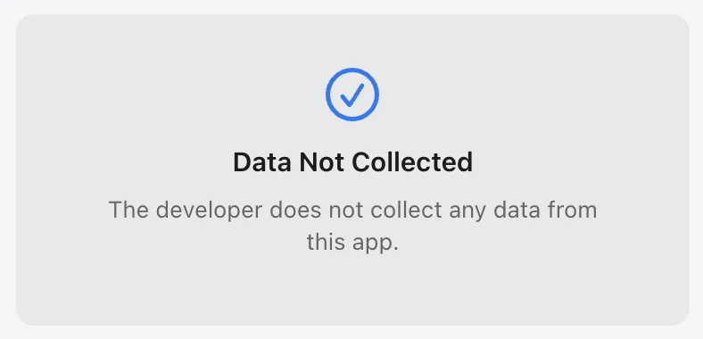
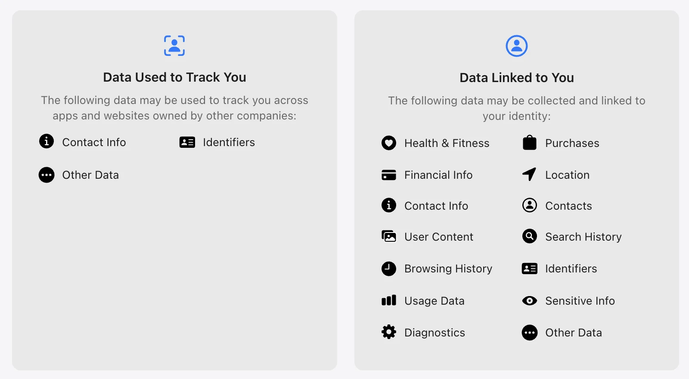

Max Photo Frames
Data Not CollectedThe current App Store listing says the developer does not collect data from this app.
The App Store currently lists Max Photo Frames as Data Not Collected. This page explains what that means and helps you compare privacy labels across apps.
Before downloading any photo app, open its App Store privacy section and compare the data practices. The serious version of our “100% free privacy” joke is simple: read the label, read the policy and ask questions.
These App Store privacy screens show the kind of information worth checking before you install an app.


Every app is different. These are examples of categories you may see in an App Store privacy label—not claims about any particular app.
The current App Store listing says the developer does not collect data from this app.
You may see contact info, identifiers or other data used to track activity across apps and websites.
Labels can show data linked to your identity, such as location, contacts, purchases, user content, search history, usage data or diagnostics.
A category is a disclosure to understand—not automatically a verdict that an app is unsafe. Match the app’s practices to what you are comfortable sharing.
Yes, and the distinction is worth understanding, because it applies to many apps you will compare.
The App Store label describes what the developer collects. When Max Photo Frames syncs your saved presets and captions, they go to your own private iCloud account, tied to your Apple Account. They do not pass through a Max34Lab server, and we cannot read them, browse them or recover them for you. Nothing about you arrives on our side, so nothing is collected.
Three things are worth knowing about how it behaves here:
When you compare photo apps, this is the question worth asking of each one: does your content go to the developer, or to your own cloud account that only you control? The label tells you the first part. The app’s own privacy policy should tell you the second. Ours is on the privacy policy page.
Here is the everyday version—not legal or technical language.
Following what you do across different apps or websites, often to measure advertising or build a profile.
Details such as your name, email address or phone number.
Numbers or codes that help recognise a device, account or installation.
Information about where your phone or tablet is, such as a precise or approximate location.
The things you create or provide, such as photos, videos, messages, captions or documents.
The people and phone numbers saved in your address book.
What you search for or the pages and content you look at inside an app or service.
How you use an app, such as taps, features opened, time spent or actions taken.
Technical information about crashes, errors, performance and the device running the app.
Information about purchases, subscriptions or payment-related activity.
Personal information that needs extra care, such as health, biometric or other sensitive details.
Information that does not fit neatly into one of the standard categories.
The exact meaning and use can vary by app. Always check the current App Store label and privacy policy before deciding what feels right for your family.